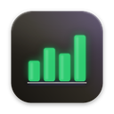

Daftarche
Daftarche is a personal account book. You import your bank statements (QFX and Excel) on your Mac, sort them into your own categories, and see where your money goes: a dashboard, charts, balances, refunds, split payments and money lent to friends. Everything stays in one file on your own computer.
Daftarche on the phone (Android) shows the same pages, read-only. Your Mac sends it a copy through your own Google Drive, locked with a key that only your phone has.
Get it
On the Mac:
On the phone: the newest Phone release on GitHub
Source code, user guide and changes: github.com/vahid-anari/daftarche
On the Mac:
pip install daftarche
(PyPI)On the phone: the newest Phone release on GitHub
Source code, user guide and changes: github.com/vahid-anari/daftarche
Free and open source (MIT License), made by Vahid Anari. Questions: vahid.anari8@gmail.com